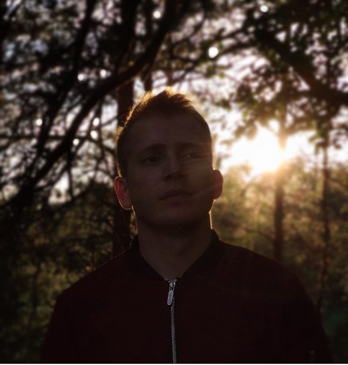

EPAM UppSkill Lab
Front-end devoloper
I graduated from the EPAM UppSkill Lab training course in the direction of Front-end devolopment. I got skills in HTML, CSS, JavaScript.
Front-end devoloper
Hello, I'm a beginner front-end developer. I want to develop in this direction. I always look for ways to improve my skills and learn new things. Currently I live in Grodno, but I'm ready to move to Minsk.
Front-end devoloper
I graduated from the EPAM UppSkill Lab training course in the direction of Front-end devolopment. I got skills in HTML, CSS, JavaScript.
Faculty of Law
I am a lawyer by my first education. Yes, I am that humanist who decided to become a programmer. Do not judge strictly
Junior Software Testing Engineer
During work I got basic skills in HTML, CSS (SCSS), JavaScript (basic React).
law enforcement officer
After graduation from University I have worked as a police officer in the police department in Grodno for 2 years.
Child educator
As a student, for two months I worked as a child educator in Anapa, Russia.